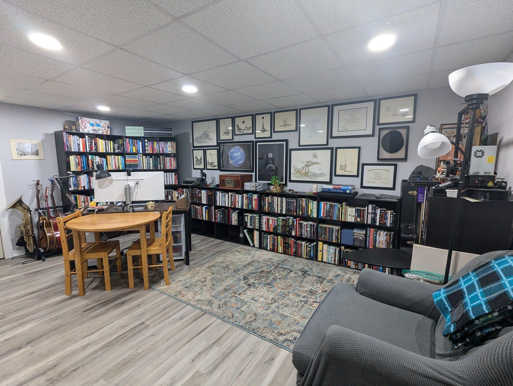

Running and a Refresh
I used to be an avid runner. Throughout my time in wrestling, marching band, and drum corps, running was always a constant, and I enjoyed it. I never seriously trained for anything more than a 10k—and I don’t plan to—but I would like to get back to a place where running is more of a part of my life.
In the past two weeks, we’ve had humidity levels making the weather outside feel above 100° for several days in a row. For whatever reason, I decided to start running again, after not going on regular runs in six or so years. I bought a new pair of Asics, which have been my go-to brand for sneakers since 2009, along with a mini MP3 player so I didn’t have to carry about a heavy phone in my pocket.
With the humidity making my glasses fog just stepping outside, a new pair of running shoes, and an MP3 player loaded with my favorite workout songs, I ran a 2-mile route around my house finishing at a 10:30 pace. This was much slower than I used to run, but I’m also giving myself some wiggle room given how long it’s been since I ran in addition to the humidity.
It’s been two weeks since that first run and I’ve already shaved two minutes off my pace time. Once I get my pace to a place I like it, I’m going to extend the length my run. Running for me has always been a mindfulness activity, using the time to think about things you don’t normally get to during the rest of the day, while getting out of the house, away from screens and distractions.
Reorganizing
I like to rearrange my office every eight months or so, both to accommodate items I purchased or got rid of, but to make things feel less stale.
I spent the majority of yesterday moving bookshelves around, cleaning, and figuring out which items I can do without.
The office has undergone quite a few changes since I moved here in July 2022, but I like this one because it feels the most open. This is also the first layout that has allowed me the wall space to hang up the artwork and other display pieces that have been collecting dust in corners for quite some time.
Relaxation
After more than two years of not taking any personal or vacation days, I took off Thursday and Friday. (It’s not a week-long vacation, but at least I indulged a little). Victoria and I took a much needed trip to Beltzville State Park to kayak, lay on the beach, and relax.
This was my first time going to Beltzville, but with it only being 30 minutes from our house, we both want to make it a more regular thing.
It was wonderful being able to completely turn my phone off, not check in at work, and genuinely enjoy time away.